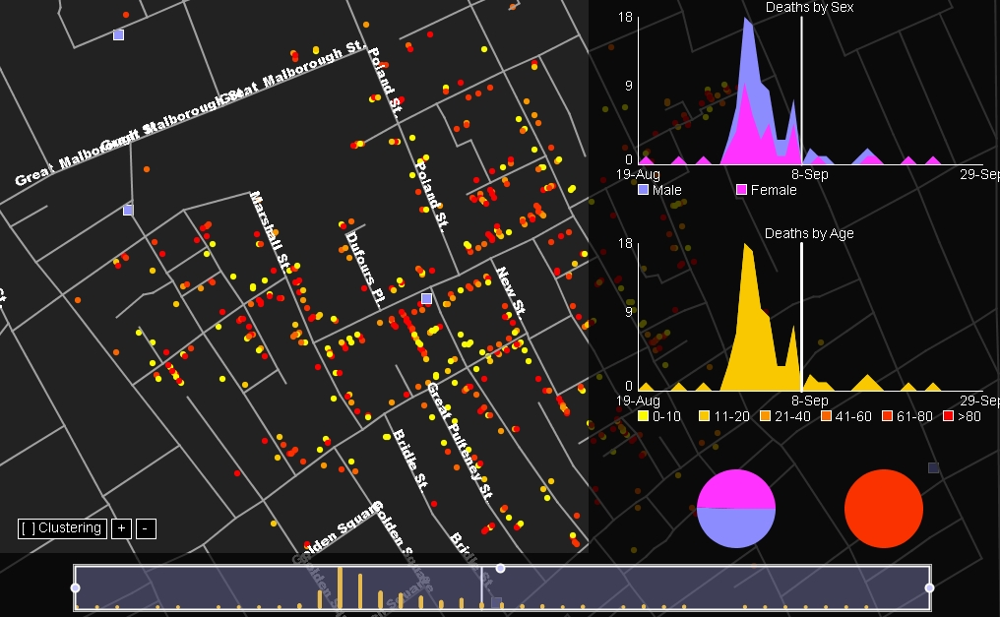
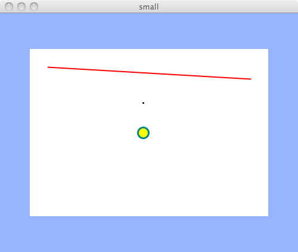
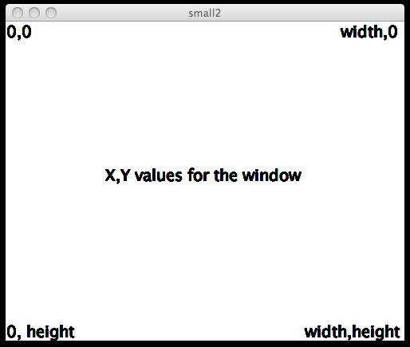
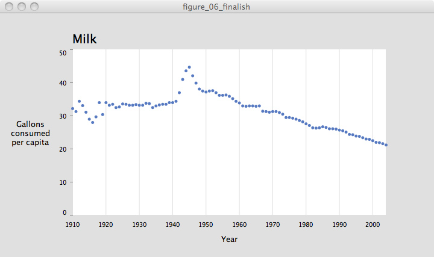
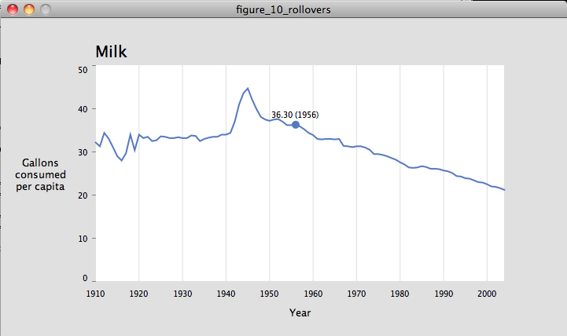
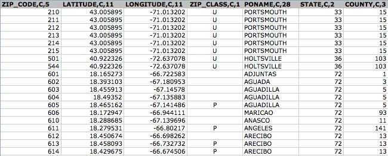

Now with computer display screens we have new options. The screens are becoming much higher resolution, approaching the resolution of film or print with increasing color gamut and contrast levels. The processing power behind the screens is increasing so we can convert data into images faster and update the images on the display faster. The ways we can interact with the screens are becoming more direct. And these trends are going to continue.
Having all this technology doesn't solve the problem of creating meaningful, useful interactive visualizations. That still falls to people writing good software.
There are various pieces of software out there that can help people create interactive visualizations of different kinds of data, e.g. flare or paraview.
In this course we are going to focus more on creating those kinds of tools so we are going to use a more generic package - processing, which can be downloaded from http://www.processing.org/
Processing is going through a revision to version 2.0 and currently is at 2.0a8. We will be using the 2.0 branch for this class. Some of the built in examples have not yet been updated to 2.0 so you may also want to download a copy of processing 1.5.1 to look at those examples (e.g. the zipcode example.)
First off we are going to look at a couple examples from the last class to give you an idea what you can do with processing.


Chapters 3 and 4 of Visualizing Data are a very good place to start looking at how to use processing to visualize data. Sample code from each chapter is available at http://benfry.com/writing/archives/3
The programs that you will be writing will:
- grab data from one or more sources (text files, databases, etc)
- combine the data together and possibly generate derived data sets from them
- load subsets of that data into memory for visualization
- encourage the user to explore the data by giving them a powerful, responsive, and convenient user interface
We are going to focus on creating and interacting with 2D displays of data. 3D data (e.g. MRI data) are covered in the 500-level version of this course - CS 524. This means we will lay out all the data on a 2D canvas and not have to worry about virtual cameras and viewports and all that CS 488 computer graphics kind of stuff.
We do need to worry about loading the data in, drawing it on the screen based on the user's current settings and letting the user make changes to those settings.
Processing has its own development environment with a text editor that holds all the files in your project and allows you to run the current version and test it before exporting it out as a stand-alone or web-based application. The application you write in processing is called a 'sketch' and it can have multiple source code files and data files sitting in the same folder.
lets start with a simple example:
// setup done once when the sketch is first started
void setup() {
size(500, 400); // automatically sets variables called width and height
// do all drawing with smooth edges
smooth();
}
// draw done repeatedly (by default 60 times per second)
void draw() {
// make the background light blue
// colours are red / green / blue with amounts of each from 0 to 255
background(150, 180, 255);
// draw a white box with no outline
fill(255, 255, 255);
noStroke();
rectMode(CORNERS);
rect(50, 60, width-50, height-60);
// draw a red line
strokeWeight(2); // set the line width
stroke(#FF0000); // can also set colours using hex representation
// where this is the same as (255, 0, 0)
line(80, 90, 420, 110);
// draw a black point
strokeWeight(3);
stroke(#000000);
point(240, 150);
// draw an aqua circle with a yellow center
strokeWeight(3);
fill(255, 255, 0);
stroke(#008888);
ellipse(240, 200, 18, 18);
}
The kinds of processing sketches you will be writing have two parts: setup which is done once when the sketch is run, and draw which is called repeatedly (be default 60 times per second.)
Sketch sets up the overall size of the drawing area, loads in any initial data, sets any overall drawing parameters, and then turns over control to draw which repeatedly loops until the sketch is closed.

and here is a quick overview of the window coordinates - noting that 0,0 is the upper left corner, and using the built in width and height variables which are set by the application.

Now lets look at a small visualization example from the beginning of Chapter 4. This looks much more like a computer program with variable declarations and functions, which reads data from a file and displays it (minimally) on the screen. It also makes use of the very helpful FloatTable class.
// declare some variables.
FloatTable data;
float dataMin, dataMax;
float plotX1, plotY1;
float plotX2, plotY2;
int yearMin, yearMax;
int[] years;
void setup() {
size(720, 405);
data = new FloatTable("milk-tea-coffee.tsv");
years = int(data.getRowNames());
yearMin = years[0];
yearMax = years[years.length - 1];
dataMin = 0;
dataMax = data.getTableMax();
// Corners of the plotted time series
plotX1 = 50;
plotX2 = width - plotX1;
plotY1 = 60;
plotY2 = height - plotY1;
smooth();
}
void draw() {
background(224);
// Show the plot area as a white box
fill(255);
rectMode(CORNERS);
noStroke();
rect(plotX1, plotY1, plotX2, plotY2);
strokeWeight(5);
// Draw the data for the first column
stroke(#5679C1);
drawDataPoints(0);
}
// Draw the data as a series of points
void drawDataPoints(int col) {
int rowCount = data.getRowCount();
for (int row = 0; row < rowCount; row++) {
if (data.isValid(row, col)) {
float value = data.getFloat(row, col);
float x = map(years[row], yearMin, yearMax, plotX1, plotX2);
float y = map(value, dataMin, dataMax, plotY2, plotY1);
// map is a nice processing function that takes numbers from one range and maps them into another range
// map(value, low1, high1, low2, high2) given value in low1 to high1 return corresponding value in low2 to high2
point(x, y);
}
}
}
and the data file milk-tea-coffee.tsv looks like:
Year Milk Tea Coffee
1910 32.2 9.6 21.7
1911 31.3 10.2 19.7
1912 34.4 9.6 25.5
1913 33.1 8.5 21.2
1914 31.1 8.9 21.8
1915 29 9.6 25
etc

You will note that this isn't particularly meaningful at this point but it has read the data in and drawn it on the screen. By the 6th version of the program given below there are labels, a grid to make it easier to see the values, and the use of the [ and ] keys to switch between the 3 datasets.
FloatTable data;
float dataMin, dataMax;
float plotX1, plotY1;
float plotX2, plotY2;
float labelX, labelY;
int rowCount;
int columnCount;
int currentColumn = 0;
int yearMin, yearMax;
int[] years;
int yearInterval = 10;
int volumeInterval = 10;
int volumeIntervalMinor = 5;
PFont plotFont;
void setup() {
size(720, 405);
data = new FloatTable("milk-tea-coffee.tsv");
rowCount = data.getRowCount();
columnCount = data.getColumnCount();
years = int(data.getRowNames());
yearMin = years[0];
yearMax = years[years.length - 1];
dataMin = 0;
dataMax = ceil(data.getTableMax() / volumeInterval) * volumeInterval;
// Corners of the plotted time series
plotX1 = 120;
plotX2 = width - 80;
labelX = 50;
plotY1 = 60;
plotY2 = height - 70;
labelY = height - 25;
plotFont = createFont("SansSerif", 20);
textFont(plotFont);
smooth();
}
void draw() {
background(224);
// Show the plot area as a white box
fill(255);
rectMode(CORNERS);
noStroke();
rect(plotX1, plotY1, plotX2, plotY2);
drawTitle();
drawAxisLabels();
drawYearLabels();
drawVolumeLabels();
stroke(#5679C1);
strokeWeight(5);
drawDataPoints(currentColumn);
}
void drawTitle() {
fill(0);
textSize(20);
textAlign(LEFT);
String title = data.getColumnName(currentColumn);
text(title, plotX1, plotY1 - 10);
}
void drawAxisLabels() {
fill(0);
textSize(13);
textLeading(15);
textAlign(CENTER, CENTER);
// Use \n (enter/linefeed) to break the text into separate lines
text("Gallons\nconsumed\nper capita", labelX, (plotY1+plotY2)/2);
textAlign(CENTER);
text("Year", (plotX1+plotX2)/2, labelY);
}
void drawYearLabels() {
fill(0);
textSize(10);
textAlign(CENTER, TOP);
// Use thin, gray lines to draw the grid
stroke(224);
strokeWeight(1);
for (int row = 0; row < rowCount; row++) {
if (years[row] % yearInterval == 0) {
float x = map(years[row], yearMin, yearMax, plotX1, plotX2);
text(years[row], x, plotY2 + 10);
line(x, plotY1, x, plotY2);
}
}
}
void drawVolumeLabels() {
fill(0);
textSize(10);
stroke(128);
strokeWeight(1);
for (float v = dataMin; v <= dataMax; v += volumeIntervalMinor) {
if (v % volumeIntervalMinor == 0) { // If a tick mark
float y = map(v, dataMin, dataMax, plotY2, plotY1);
if (v % volumeInterval == 0) { // If a major tick mark
if (v == dataMin) {
textAlign(RIGHT); // Align by the bottom
} else if (v == dataMax) {
textAlign(RIGHT, TOP); // Align by the top
} else {
textAlign(RIGHT, CENTER); // Center vertically
}
text(floor(v), plotX1 - 10, y);
line(plotX1 - 4, y, plotX1, y); // Draw major tick
} else {
// Commented out, too distracting visually
//line(plotX1 - 2, y, plotX1, y); // Draw minor tick
}
}
}
}
void drawDataPoints(int col) {
for (int row = 0; row < rowCount; row++) {
if (data.isValid(row, col)) {
float value = data.getFloat(row, col);
float x = map(years[row], yearMin, yearMax, plotX1, plotX2);
float y = map(value, dataMin, dataMax, plotY2, plotY1);
point(x, y);
}
}
}
void keyPressed() {
if (key == '[') {
currentColumn--;
if (currentColumn < 0) {
currentColumn = columnCount - 1;
}
} else if (key == ']') {
currentColumn++;
if (currentColumn == columnCount) {
currentColumn = 0;
}
}
}

the 10th iteration shows the data as a line instead of discrete points, and adds the ability for the user to move the mouse over the line and see the actual data values at that point
void drawDataLine(int col) {
beginShape();
for (int row = 0; row < rowCount; row++) {
if (data.isValid(row, col)) {
float value = data.getFloat(row, col);
float x = map(years[row], yearMin, yearMax, plotX1, plotX2);
float y = map(value, dataMin, dataMax, plotY2, plotY1);
vertex(x, y);
}
}
endShape();
}
void drawDataHighlight(int col) {
for (int row = 0; row < rowCount; row++) {
if (data.isValid(row, col)) {
float value = data.getFloat(row, col);
float x = map(years[row], yearMin, yearMax, plotX1, plotX2);
float y = map(value, dataMin, dataMax, plotY2, plotY1);
if (dist(mouseX, mouseY, x, y) < 3) {
// dist returns the distance between two points
// dist(x1, y1, x2, y2);
// dist(x1, y1, z1, x2, y2, z2);
strokeWeight(10);
point(x, y);
fill(0);
textSize(10);
textAlign(CENTER);
text(nf(value, 0, 2) + " (" + years[row] + ")", x, y-8);
textAlign(LEFT);
}
}
}
}

the 15th version draws the data as a filled area and adds tabs so the user can see the different data sets that are available and click on the tabs to move between them
void drawDataArea(int col) {
beginShape();
for (int row = 0; row < rowCount; row++) {
if (data.isValid(row, col)) {
float value = data.getFloat(row, col);
float x = map(years[row], yearMin, yearMax, plotX1, plotX2);
float y = map(value, dataMin, dataMax, plotY2, plotY1);
vertex(x, y);
}
}
// Draw the lower-right and lower-left corners
vertex(plotX2, plotY2);
vertex(plotX1, plotY2);
endShape(CLOSE);
}
void drawTitleTabs() {
rectMode(CORNERS);
noStroke();
textSize(20);
textAlign(LEFT);
// On first use of this method, allocate space for an array
// to store the values for the left and right edges of the tabs
if (tabLeft == null) {
tabLeft = new float[columnCount];
tabRight = new float[columnCount];
}
float runningX = plotX1;
tabTop = plotY1 - textAscent() - 15;
tabBottom = plotY1;
for (int col = 0; col < columnCount; col++) {
String title = data.getColumnName(col);
tabLeft[col] = runningX;
float titleWidth = textWidth(title);
tabRight[col] = tabLeft[col] + tabPad + titleWidth + tabPad;
// If the current tab, set its background white, otherwise use pale gray
fill(col == currentColumn ? 255 : 224);
rect(tabLeft[col], tabTop, tabRight[col], tabBottom);
// If the current tab, use black for the text, otherwise use dark gray
fill(col == currentColumn ? 0 : 64);
text(title, runningX + tabPad, plotY1 - 10);
runningX = tabRight[col];
}
}
void mousePressed() {
if (mouseY > tabTop && mouseY < tabBottom) {
for (int col = 0; col < columnCount; col++) {
if (mouseX > tabLeft[col] && mouseX < tabRight[col]) {
setCurrent(col);
}
}
}
}

the 17th version adds interpolation making use of the useful integrator so that when the user changes the current visualization the display flows from one graph to the other rather than jumping. This can make it easier to see the differences but requires a different way of thinking about the display of the data. Instead of displaying the actual data values the sketch displays the set of current values which are moving closer to one data set or another at any given time.
The processing API reference page is a good place to see what functions are available: http://www.processing.org/reference/
In each of these examples there has been a single chart. Visual Analytics tends to work better when you have multiple different simultaneous representations of the same data so you just as the above code sets locations relative to the height and width of the canvas, you should think about setting locations relative to each individual chart and the positions those charts in the coordinate system of the canvas. This can also be important if you want the user to be able to dynamically change the size of the application window and have the components of the window automatically adjust, or to allow the user to zoom in and out.
You should start your project by drawing some sketches or storyboards for how the canvas will be layed out and how the interface will look. You may prefer to do this by hand on pieces of paper, or using a drawing tool to lay out and more precisely the different areas of the window. Its usually worth it to spend more time at this stage so you will have to do less re-organization later on. Once you take a quick look at the data using excel or your favorite plotting program you will get an idea of the rough size of the chart(s) that you will need and how much space they will take up on the screen. Where will you put the controls? Where will you put the text to tell the user how to interact?
Since we are going to be using the large touch-screen wall for the projects you will need to write code that can run with a mouse / trackpad on your laptop / desktop for testing but that can easily adapt to the 8160 by 2304 touch-screen wall running Processing under SUSE 12.1.
Arthur has created a library that should make this pretty straight forward. The code, including examples, is located at:
http://code.google.com/p/omicron-sdk/downloads/list
in particular the OmicronTouchExample should be useful.
I also made a version of the Step_17_Interpolate.pde to show how you the changes needed.
The major issues are
- conecting to the touchserver when using touch on the classroom wall
- using touchDown, touchUp, touchMove instead of the built in
processing mouse calls - they will accept mouse input if touch
is not available
- scaling text and graphics for the larger screen
- making sure anything that needs to be touched can be reached and is a big enough target
//////////////////////////////////////////////////////////////////////////
import processing.net.*;
import omicronAPI.*;
OmicronAPI omicronManager;
TouchListener touchListener;
// Link to this Processing applet - used for touchDown() callback example
PApplet applet;
// Override of PApplet init() which is called before setup()
public void init() {
super.init();
// Creates the OmicronAPI object. This is placed in init() since we want to use fullscreen
omicronManager = new OmicronAPI(this);
// Removes the title bar for full screen mode (present mode will not work on Cyber-commons wall)
omicronManager.setFullscreen(true);
}
int scaleFactor = 5;
// 5 for cyber-commons
// 2 for full screen macbook
//////////////////////////////////////////////////////////////////////////
FloatTable data;
float dataMin, dataMax;
float plotX1, plotY1;
float plotX2, plotY2;
float labelX, labelY;
int rowCount;
int columnCount;
int currentColumn = 0;
int yearMin, yearMax;
int[] years;
int yearInterval = 10;
int volumeInterval = 10;
int volumeIntervalMinor = 5;
float[] tabLeft, tabRight;
float tabTop, tabBottom;
float tabPad = 10;
Integrator[] interpolators;
PFont plotFont;
void setup() {
// size(720, 405);
//////////////////////////////////////////////////////////////////////////
size( 8160, 2304, P3D ); // Cyber-Commons wall
//size( 1680, 1050, P3D ); // macbook fullscreen
// Make the connection to the tracker machine (uncomment this if testing with touch)
//omicronManager.ConnectToTracker(7001, 7340, "131.193.77.104");
// Create a listener to get events
touchListener = new TouchListener();
// Register listener with OmicronAPI
omicronManager.setTouchListener(touchListener);
// Sets applet to this sketch
applet = this;
//////////////////////////////////////////////////////////////////////////
data = new FloatTable("milk-tea-coffee.tsv");
rowCount = data.getRowCount();
columnCount = data.getColumnCount();
years = int(data.getRowNames());
yearMin = years[0];
yearMax = years[years.length - 1];
dataMin = 0;
dataMax = ceil(data.getTableMax() / volumeInterval) * volumeInterval;
interpolators = new Integrator[rowCount];
for (int row = 0; row < rowCount; row++) {
float initialValue = data.getFloat(row, 0);
interpolators[row] = new Integrator(initialValue);
interpolators[row].attraction = 0.1; // Set lower than the default
}
plotX1 = 60+70*scaleFactor;
plotX2 = width - 80;
labelX = 20+35*scaleFactor;
plotY1 = 60+30*scaleFactor;
plotY2 = height - 70 - 15*scaleFactor;
labelY = height - 25 - 5*scaleFactor;
plotFont = createFont("SansSerif", 20*scaleFactor);
textFont(plotFont);
smooth();
}
void draw() {
background(224);
//////////////////////////////////////////////////////////////////////////
// For event and fullscreen processing, this must be called in draw()
omicronManager.process();
//////////////////////////////////////////////////////////////////////////
// Show the plot area as a white box
fill(255);
rectMode(CORNERS);
noStroke();
rect(plotX1, plotY1, plotX2, plotY2);
drawTitleTabs();
drawAxisLabels();
for (int row = 0; row < rowCount; row++) {
interpolators[row].update();
}
drawYearLabels();
drawVolumeLabels();
noStroke();
fill(#5679C1);
drawDataArea(currentColumn);
}
void drawTitleTabs() {
rectMode(CORNERS);
noStroke();
textSize(20*scaleFactor);
textAlign(LEFT);
// On first use of this method, allocate space for an array
// to store the values for the left and right edges of the tabs
if (tabLeft == null) {
tabLeft = new float[columnCount];
tabRight = new float[columnCount];
}
float runningX = plotX1;
tabTop = plotY1 - textAscent() - 15;
tabBottom = plotY1;
for (int col = 0; col < columnCount; col++) {
String title = data.getColumnName(col);
tabLeft[col] = runningX;
float titleWidth = textWidth(title);
tabRight[col] = tabLeft[col] + tabPad + titleWidth + tabPad;
// If the current tab, set its background white, otherwise use pale gray
fill(col == currentColumn ? 255 : 224);
rect(tabLeft[col], tabTop, tabRight[col], tabBottom);
// If the current tab, use black for the text, otherwise use dark gray
fill(col == currentColumn ? 0 : 64);
text(title, runningX + tabPad, plotY1 - 10);
runningX = tabRight[col];
}
}
//////////////////////////////////////////////////////////////////////////
//void mousePressed() {
// if (mouseY > tabTop && mouseY < tabBottom) {
// for (int col = 0; col < columnCount; col++) {
// if (mouseX > tabLeft[col] && mouseX < tabRight[col]) {
// setCurrent(col);
// }
// }
// }
//}
//////////////////////////////////////////////////////////////////////////
void touchDown(int ID, float xPos, float yPos, float xWidth, float yWidth){
// noFill();
// stroke(255,0,0);
// ellipse( xPos, yPos, xWidth * 2, yWidth * 2 );
if (yPos > tabTop && yPos < tabBottom) {
for (int col = 0; col < columnCount; col++) {
if (xPos > tabLeft[col] && xPos < tabRight[col]) {
setCurrent(col);
}
}
}
}// touchDown
void setCurrent(int col) {
currentColumn = col;
for (int row = 0; row < rowCount; row++) {
interpolators[row].target(data.getFloat(row, col));
}
}
void drawAxisLabels() {
fill(0);
textSize(13*scaleFactor);
textLeading(15*scaleFactor);
textAlign(CENTER, CENTER);
text("Gallons\nconsumed\nper capita", labelX, (plotY1+plotY2)/2);
textAlign(CENTER);
text("Year", (plotX1+plotX2)/2, labelY);
}
void drawYearLabels() {
fill(0);
textSize(10*scaleFactor);
textAlign(CENTER);
// Use thin, gray lines to draw the grid
stroke(224);
strokeWeight(1);
for (int row = 0; row < rowCount; row++) {
if (years[row] % yearInterval == 0) {
float x = map(years[row], yearMin, yearMax, plotX1, plotX2);
text(years[row], x, plotY2 + textAscent() + 10);
line(x, plotY1, x, plotY2);
}
}
}
void drawVolumeLabels() {
fill(0);
textSize(10*scaleFactor);
textAlign(RIGHT);
stroke(128);
strokeWeight(1);
for (float v = dataMin; v <= dataMax; v += volumeIntervalMinor) {
if (v % volumeIntervalMinor == 0) { // If a tick mark
float y = map(v, dataMin, dataMax, plotY2, plotY1);
if (v % volumeInterval == 0) { // If a major tick mark
float textOffset = textAscent()/2; // Center vertically
if (v == dataMin) {
textOffset = 0; // Align by the bottom
} else if (v == dataMax) {
textOffset = textAscent(); // Align by the top
}
text(floor(v), plotX1 - 10, y + textOffset);
line(plotX1 - 4, y, plotX1, y); // Draw major tick
} else {
//line(plotX1 - 2, y, plotX1, y); // Draw minor tick
}
}
}
}
void drawDataArea(int col) {
beginShape();
for (int row = 0; row < rowCount; row++) {
if (data.isValid(row, col)) {
float value = interpolators[row].value;
float x = map(years[row], yearMin, yearMax, plotX1, plotX2);
float y = map(value, dataMin, dataMax, plotY2, plotY1);
vertex(x, y);
}
}
vertex(plotX2, plotY2);
vertex(plotX1, plotY2);
endShape(CLOSE);
}
//////////////////////////////////////////////////////////////////////////
void touchMove(int ID, float xPos, float yPos, float xWidth, float yWidth){
noFill();
stroke(0,255,0);
ellipse( xPos, yPos, xWidth * 2, yWidth * 2 );
}// touchMove
void touchUp(int ID, float xPos, float yPos, float xWidth, float yWidth){
noFill();
stroke(0,0,255);
ellipse( xPos, yPos, xWidth * 2, yWidth * 2 );
}// touchUp
//////////////////////////////////////////////////////////////////////////
Last time we took a quick look at the zip code app in processing. Lets look at the data side of that application in more detail. http://benfry.com/zipdecode/
The data comes from http://www.census.gov/geo/www/tiger/zip1999.html as a .doc file with metadata and .dbf dBase file with the data.
Metadata files are very very very helpful, especially as the years go by and 'common' formats change, technology changes, and the world around us changes. It gives information on when the data was made available, where the data came from, who processed it, how to make sense of it, and what the current format is. This meta data file includes this information:
LandView® IV Help
Zip
Codes
The Zip Code file in LandView IV was prepared by the
Bureau of Census from the U.S. Postal Service (USPS)
City-State file (November, 1999). This file contains all
5-digit ZIP codes defined as of November 1, 1999, the state
and county FIPS codes and the Post Office names associated
with them. (Note – For ZIP codes that cross county
boundaries, the Post Office file assigns that ZIP code to
just one of the counties rather than to each county.)
The Census Bureau then determined a geographic
coordinate (latitude and longitude) for each ZIP code in the
City-State file by processing it against the Bureau’s
internal TIGER database for the state and county specified
for the ZIP code. (Before processing the file against TIGER,
the Census Bureau excluded overseas military APO/FPO records
from the file). For those records where the ZIP code could
not be located in the TIGER database, the county internal
point (in many cases the geographic centroid) was assigned
to the ZIP code. This typically occurred on records
containing either a “P” or “U” in the ZIP_CLASS field.
The database structure, including field names, data
types, field lengths, number of decimal places, and field
descriptions for file ZIPNOV99.DBF are as follows:
ZIP_CODE
C
5
The 5-digit zip code.
LATITUDE
C
10
Latitude expressed as a signed integer with six
decimal places. Negative numbers are in the southern
hemisphere.
LONGITUDE C
11
Longitude
expressed as a signed integer with six decimal places.
Negative numbers are in the eastern hemisphere.
ZIP_CLASS
C
1
Zip Code classification. Values are:
M = APO/FPO
Military Zip
P = P.O. Box
U = Unique Zip,
assigned to large corporations or government agencies
Blank =
Non-unique Zip, shared by numerous residences and businesses
PONAME
C
28
USPS Post Office name.
STATE
C
2
Federal Information Processing Standards (FIPS) state
code.
COUNTY
C
3
FIPS county code.
IDMARPLOT C
16
Used by the LandView 4 program
The data itself is stored in the ZIPNOV99.DBF dBase file. dBase was a very popular database system in the 1980s for computers like the apple ][ or ibm pc with data stored on 5.25" floppy discs. It is not a very convenient format to use today so we need to convert it. Fortunately there are converters to move the data into an excel spreadsheet or text. Keep in mind that any format you store data in today will seem just as antiquated as 5.25" floppies in a decade or two.
Here are the first few lines from that file once its converted to text.

Several columns can be used as is: zip_code, latitude, and longitude, though the zip code has lost its leading 0s for those less than 5 digits. The state info is useful but needs to be converted to a more readable format and poname (city name) would be more readable if it wasn't SHOUTING AT US IN ALL CAPS. Names of places are more readable in Mixed Case.
If you aren't going to need to update the source data, or read it live off the web / grid / cloud each time you launch your application then you can convert the file manually into a more useful format and use that converted file as the input to your visualization. If you do need to regularly access updated data then you will need to convert the source data in your program or in an auxiliary program to a more convenient, compact, usable representation. This may leave the data in a text file for better readability, or a binary file for compact representation, or a database to facilitate complex queries. After doing this conversion you need to make sure that your conversion didn't introduce any errors into the dataset. Keeping track of the origins of the datasets, the modifications to them, and who made those modifications, what we call Provenance, is very very important for having confidence in the final visualization and analysis.
You will need another data file (http://www.itl.nist.gov/fipspubs/fip5-2.htm) to convert the state numeric code into an alphabetic abbreviation. The first 56 encode the current 50 states and the District of Columbia (e.g. Alabama has FIPS State Numeric Code 01 and FIPS State Alpha Code AL). The numbers above 56 encode territories like Guam (66) or Puerto Rico (72). In order to make the visualization more compact only the continental US is shown, so post offices in Alaska, Hawaii, and the territories are removed based on their state ID.
Another important issue is how to draw the data points. Given latitude and longitude values, which are a spherical coordinate system, there are several ways to map those values to a flat 2D coordinate system. All of these mappings have distortions. The code uses an Albers Equal Area Conic projection (http://en.wikipedia.org/wiki/Albers_projection). Another alternative would be to plot the data on top of an existing map, in which case you need to match the projection of that map, e.g. with this example:
http://www.tom-carden.co.uk/wp-content/uploads/2008/11/modest_maps_interactive.zip
As we saw last week its good to start out giving an overview of the data to give the user context and then let him or her start filtering and zooming in on the details, so the app starts out with all the dots for the various zip codes displayed showing the entire continental US mostly filling the window in a common north up orientation. This is a good point to look for obvious errors as there may be data points in places that make no sense or the overall distribution of the points might not look like the continental US.
another nice example to look at is the baseball performance vs budget example from chapter 5 of Visualizing Data. It makes use of severak data files
http://benfry.com/writing/salaryper/salaries.tsv
nyy 189639045
bos 143026214
nym 115231663
ana 109251333
cws 108671833
la 108454524
sea 106460833
chc 99670332
det 95180369
bal 93554808
stl 90286823
sf 90219056
phi 89428213
hou 87759000
atl 87290833
tor 81942800
oak 79366940
min 71439500
mil 70986500
cin 68904980
tex 68318675
kc 67116500
cle 61673267
sd 58110567
col 54424000
ari 52067546
pit 38537833
was 37347500
fla 30507000
tb 24123500
http://benfry.com/writing/salaryper/teams.tsv
nyy NY Yankees
bos Boston
nym New York Mets
ana LA Angels
cws Chi White Sox
la LA Dodgers
sea Seattle
chc Chi Cubs
det Detroit
bal Baltimore
stl St. Louis
sf San Francisco
phi Philadelphia
hou Houston
atl Atlanta
tor Toronto
oak Oakland
min Minnesota
mil Milwaukee
cin Cincinnati
tex Texas
kc Kansas City
cle Cleveland
sd San Diego
col Colorado
ari Arizona
pit Pittsburgh
was Washington
fla Florida
tb Tampa Bay
and then a series of files giving the standings on each day of the season
http://benfry.com/writing/salaryper/individual/20070930.tsv
bos 96 66
nyy 94 68
tor 83 79
bal 69 93
tb 66 96
ana 94 68
sea 88 74
oak 76 86
tex 75 87
cle 96 66
det 88 74
min 79 83
cws 72 90
kc 69 93
phi 89 73
nym 88 74
atl 84 78
was 73 89
fla 71 91
ari 90 72
col 89 73
sd 89 73
la 82 80
sf 71 91
chc 85 77
mil 83 79
stl 78 84
hou 73 89
cin 72 90
pit 68 94
ControlP5 has been popular in the last several classes for creating user interface elements, but the default color scheme really needs to be customized if you are going to use it. It is regularly being updated.
- http://www.sojamo.de/libraries/controlP5/
Here is another link to the modest maps example above - http://www.tom-carden.co.uk/wp-content/uploads/2008/11/modest_maps_interactive.zip
If you prefer to use eclipse as your IDE there are instructions - http://processing.org/learning/eclipse/
Another nice place to look for ideas is http://www.openprocessing.org/